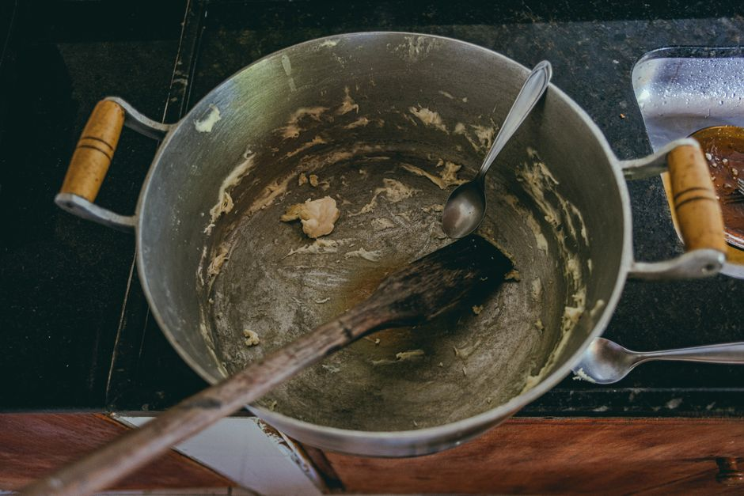

Maneras de Transformar Restos en Platos Económicos Sin Llegar a la Monotonía

Photo: Matheus Alves / Pexels
Bien aprovechadas, las sobras ahorran dinero y tiempo. Para no aburrirte, transfórmalas en lugar de recalentarlas tal cual. Y para evitar intoxicaciones alimentarias, conviene seguir unas reglas básicas de conservación.
Reglas de seguridad
- Refrigera las sobras en las dos horas siguientes a la cocción, en recipientes limpios y poco profundos para que se enfríen rápido.
- Guárdalas en la nevera a 4 °C o menos y consúmelas en dos o tres días. Pasado ese tiempo, congélalas.
- El arroz y la pasta cocidos no deben quedarse a temperatura ambiente: enfríalos pronto.
- Recalienta hasta que el plato esté muy caliente por dentro (74 °C) y hazlo una sola vez.
- Si dudas por el olor, el aspecto o el tiempo de conservación, tíralo.
Ideas de transformación
- Arroz cocido: arroz salteado con verduras y huevo bien cocido, croquetas de arroz, gratinado.
- Verduras cocidas: sopa, tortilla o frittata, guarnición de pasta.
- Pollo o carne cocinada: wraps, bocadillos, ensalada, salsa para pasta.
- Pasta cocida: pasta al horno, ensalada fría, salteado con verduras.
- Pan duro: torrijas, picatostes, pan rallado.
- Fruta muy madura: compota, batidos, magdalenas.
Cambia los sabores
Las mismas sobras parecen otro plato con una especia, una salsa o una verdura fresca. El pollo sobrante puede ser un curry una noche y una ensalada al día siguiente.
Organízate
Escribe la fecha en el recipiente y coloca lo más antiguo delante. Si cocinas para varios días, congela parte de las raciones desde el principio.
Descongela con seguridad
Descongela en la nevera, en el microondas o en agua fría si vas a cocinar enseguida, pero nunca sobre la encimera durante horas.
Con buena organización y estas reglas sencillas ahorras de forma segura.